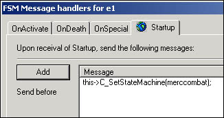
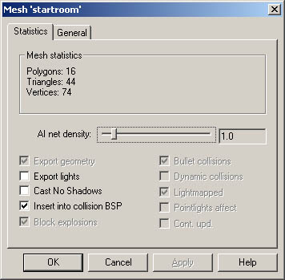
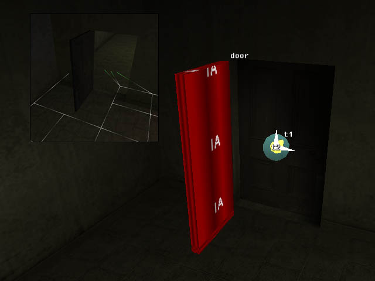
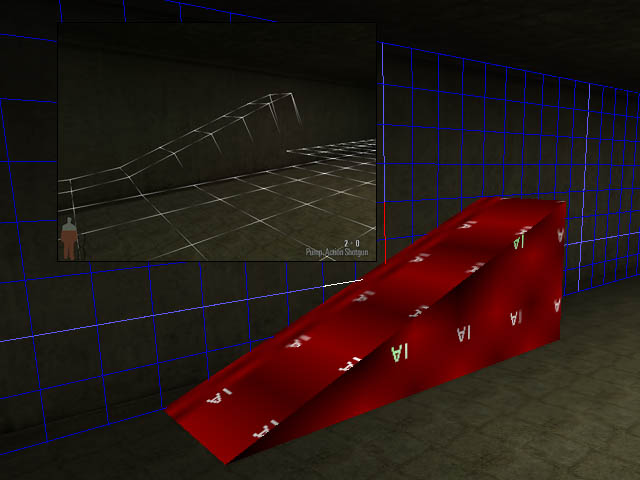
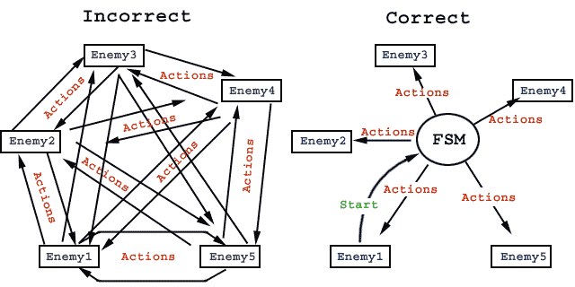
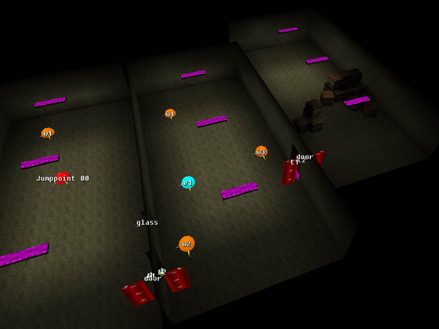
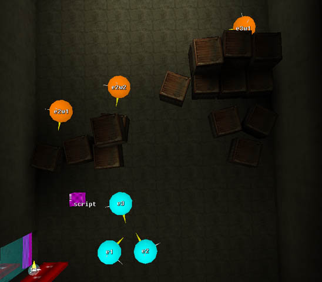
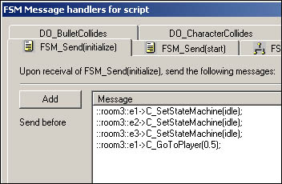
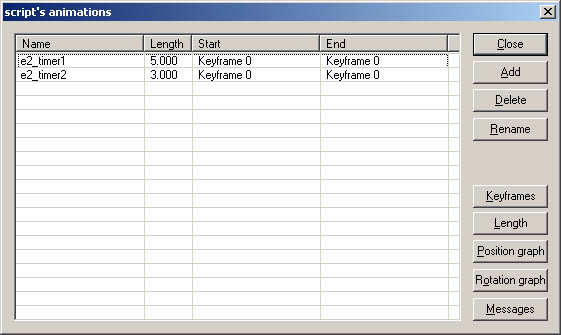
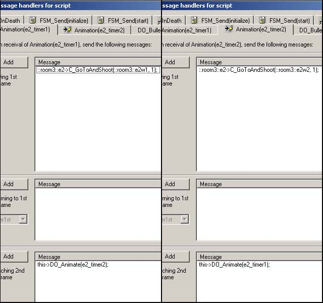

Enemies and AI
With this tutorial you are going to learn how to script the AI for enemies
and other NPC's. That includes messages to change the behavior and the perceiving properties of the enemies, and the messages to make them
move
around in the level. We are going to learn how to calculate AI network to
the levels, and we are going to make the enemies switch weapons. Also deathcams
and custom animations are going to be covered. You can download the
example level from here: AI_scripting.zip
The Statemachine States
One of the basic blocks of the AI scripting in Max Payne is so called statemachine
states. They are different states for enemies that define their behavior. The usable
statemachine states that define the combat behavior are:
MercCombat - General combat statemachine. The enemy will follow player and
perform dodges spontaneously during combat.
MercCombatDefensive - Same as above, but the enemy won't follow the
player very far.
MobsterCombat - The same as MercCombat but the enemy won't perform
dodges.
MobsterCombatDefensive - The same as MercCombatDefensive, but the
enemy won't perform dodges.
MeleeCombat - Combat statemachine for enemies who are using a melee weapon.
CrouchAndShoot - Crouches and shoots. If it looses player from
sight, it will start following.
CrouchAndShootStatic - Crouches and shoots. Won't follow player.
StandAndShoot - Stands and shoots. Follows the player if the sight
is lost.
StandAndShootStatic - Stands and shoots. Won't follow the player.
WalkAndShoot - Walks towards the player while shooting. Will start
running if loses the sight to the player.
CrouchWaitAndShoot - Was used for statemachine
testing purposes. Redundant.
CrouchWaitAndShootStatic - Was used for
statemachine testing purposes. Redundant.
RunWalkAndShoot - Runs towards the player and
once close enough, starts walking and shooting. Redundant.
WalkStopAndShoot - Same as WalkAndShoot but
won't shoot while walking. Redundant.
You can get pretty far with the statemachines above, but every now and then
you want to do some more specific moves, and they are handled with
statemachines as well:
SingleDodgeLeft, -Right, -Forward, -Backward - Performs a dodge and
returns to the previous statemachine in the stack.
SingleShootDodgeLeft, -Right, -Forward, -Backward - Performs a
shootdodge and returns to the previous statemachine in the stack.
SingleShootAccurately - Shoots once (relatively) accurately, and
then returns to the previous statemachine. Quite redundant to be honest, maybe useful
in cinematics.
With the statemachines above you can already do some simple combat. Load up
the level as it was left after the FSM & DO tutorial, or just download the
example level of that tutorial.
Then let's place an enemy into the level. As you might remember, you can
place entities to the grid by pressing N in F3 mode. Select Enemy
from the drop-down dialog. The properties of the newly created enemy will pop
up. Rename it to e1. You can now also change the type of the enemy from the
Entity-tab if you want to. You can also rotate the enemy into the
desired orientation by selecting the enemy, pressing Y in F5 mode and
moving the mouse. But don't forget that you have to be in pivot rotation mode
(A to toggle) in order to rotate any entity.
Now as you've got an enemy in the level, it doesn't do anything by default.
It's just standing there in idle statemachine state (more about idle
states in a moment). You can open the FSM dialog of the enemy (4 in F5
mode) and change its statemachine state at its Startup into any of the states
above with a message called C_SetStateMachine.

Now you can try and export the level and see how it works, although in order
for the enemy to be able to follow the player through rooms and around
obstacles correctly, we are going to have to calculate the ai-network
for the level. You already know how to add your levels to the levels.txt
correctly, so add a new block for this level of ours, but make sure it will
have the flag EnableAI set as true. This will tell the engine to look
for AI network for this level.
The actual calculation of the network happens in the game. Once you've
exported the level .LDB, and you have the levels.txt all sorted out, launch
the game and type the following to the console:
MaxPayne_GameMode->GM_InitAndCalcAI( my_AI_level );
X_ModeSwitch->S_ModeSwitch(Game);
You will need to do this only once if you don't touch the geometry of your
level, as the game will save the AI net to the same directory as where your
.LDB file is, with .AI-file extension.
Once the level has loaded up and your PC has done all the crunching, you
can view the AI network by pressing F7. Or view the AI nodes by
pressing F8 (Of course, only in developer mode with developer keys
enabled).
You can try to combat against the enemy now. Notice how it can navigate
from one room to another without problems.
Perceiving properties
Note how the enemy can hear you if you start shooting even if it
can't see you. We can change the perceiving properties of the enemies by using
the following statemachine states:
Idle - This is the default statemachine. The enemy can hear and see
the player.
IdleUntilEnemySeen - In this statemachine the enemy can't hear the
player at all. Very useful for setting up ambushes.
Nonreactive - In this statemachine the enemy won't perceive the
player at all.
To get an enemy into any of these statemachines, use once again the C_SetStateMachine
-message. And when the enemy perceives the player, it actually means it will
trigger its OnActivate event, thus you can add whatever messages to the
OnActivate -message tab of the enemy to make various things happen. Most
commonly to make the enemy to react to the player somehow (Switch into a
combat statemachine). In all the combat
statemachines that were listed before, the enemies have the same hearing and
seeing properties as in Idle statemachine, thus they will also trigger the
OnActivate event once the player is perceived.
Notice though that the enemy
won't re-trigger its OnActivate event when perceiving player multiple
times for as long as it
has not forgotten the
player (30 seconds from the last sight), or as long as its statemachine hasn't
been re-switched
into Idle, Idleuntilenemyseen or Nonreactive.
Some examples, let's say you want the enemy not to be able to hear
player. You do this by adding the following to the Startup tab:
This->C_SetStateMachine( idleuntilenemyseen);
And to the OnActivate tab:
This->C_SetStateMachine( mobstercombat );
You can also stack the statemachines, so if you want an enemy to do
a shootdodge backwards when it perceives you, and then start chasing you, you
can do it by sending these messages at OnActivate:
this->C_SetStateMachine(mobstercombat);
this->C_SetStateMachine(singleshootdodgebackward);
What this does is that it first sets the statemachine into MobsterCombat,
and immediately after that into SingleShootDodgeBackward. The statemachines
are stacked, so now the enemy has these two statesmachines stacked on top of
the IdleUntilEnemySeen. The statemachines are stacked in the order of
execution, so the enemy will in practice go into SingleShootDodgeBackward
statemachine first (which ends up on top of the stack), and once it's been
executed, it will revert to the previous statemachine in the stack, which is
MobsterCombat. Play around with it. You can stack multiple dodges and
shootdodges in there if you wish.
Here's still some more statemachines you should find useful:
StandAndIdle - Same as idle but faces the player at all times, and
won't cause the re-trigger of OnActivate event.
Crouch - Same as idle, but crouching, and won't cause the re-trigger
of OnActivate event.
Delay500ms - A statemachine that forces the enemy into
"idle" state for half a second and then reverts to the previous
statemachine in the stack.
Delay1s - Same as above but lasts one second.
Delay2s - Same as above but lasts two seconds.
More advanced actions
Let's next try and add a little animation and some sound for the enemy once
it spots you. To the StartUp tab, put these messages:
This->C_SetStateMachine( idleuntilenemyseen );
This->C_RemoveAllWeapons( Deserteagle );
This->C_PickupWeapon( Pumpshotgun );
This->C_PickupAmmo( Pumpshotgun, 3);
To the OnActivate tab replace the existing messages with the following:
This->C_SetStateMachine( mobstercombat );
This->C_SetStateMachine( delay1s );
This->C_SetIdle(1, false);
This->A_Play3DSound(enemy, mobster_alert,head);
And to its OnDeath tab:
This->A_StopAll3DSounds(Head);
This->CAM_AnimateParented( Death_03 );
Now you can export the level and try it out. The enemy will initially have
a pumpshotgun at hand, and when it sees the player, it will shout an alert, mess with
its weapon for a moment,
and then start to shoot at you. Once it has shot you three times with a
pumpshotgun, it will switch to deserteagle.
Here's some explanations about the new messages in Startup tab:
C_RemoveAllWeapons( deserteagle ); - Removes all the weapons from
the character, but gives it the weapon defined in the parameters, plus
infinite ammo for that weapon. With this message, the weapon will just suddenly appear into the hand of
the enemy, so it's mostly useful just for the startup of the level. The valid
parameters are baseballbat, beretta, berettadual, deserteagle,
grenade, ingram, ingramdual, jackhammer, m79,
molotov, mp5, pumpshotgun, sawedshotgun, sniper,
leadpipe and empty. See data\database\weapons\.
C_PickupWeapon( Pumpshotgun ); - Gives the enemy a pumpshotgun in
addition to the desert eagle. With this message, the enemy will take the
weapon out of his pocket with an animation, so it can be sent to an enemy in
the middle of a combat situation if that is desired. Or you can for example
have an enemy with empty weapon at startup, and send this message to
the enemy as it spots the player. The enemy doesn't get any
ammo with this message, and it won't use the weapon it has if it doesn't have
any ammo. The valid parameters are the same as above.
C_PickupAmmo( Pumpshotgun, 3 ); - Gives the enemy three shells for
the pumpshotgun. Once again the valid weapon names are the same as
above.
Whenever an enemy has multiple weapons, it will always use the most
powerful ones first, and if it depletes all the ammo, switch to the second
best weapon, etc. The priority list can be seen from data\database\weaponid.h
What happens in the OnActivate event is that the very first message sets the statemachine into MobsterCombat, and the
second message immediately stacks another statemachine (Delay1s) up on top
of it, thus causing the enemy to idle for 1 additional second after
perceiving the player. This additional second is in there just so that we can
animate the enemy at idle instead of making it start the combat immediately.
With C_SetIdle we change the idle animation to be "1"
instead of the default "0". The idle animation "1" is a
reaction animation to the player for all common mobsters. The
"false" flag in there means that the animation won't be looping. If
we set it to looping, the enemy would restart doing this animation every time
it went idle. As it's false, the enemy will execute the animation only once,
and after that it's idle animation will be whatever it previously was.
There's basically 5 regular slots for idle animations per character, plus 5
more slots to be used if the character is wounded. You can make use for all 10
slots in MaxED by using C_SetIdle and C_SetWoundedAnimations
messages. The default animations are:
Slot 0 - The default standing animation
Slot 1 - Reaction to Max
Slot 2 - Aim (handy for ambushes)
Slot 3 - Get up from sitting
Slot 4 - Using something
To change the animation between any of these you do it with C_Setdle,
as you noticed. In the parameters you define the actual slot, and whether you
want the animation to loop or not. Note that some animations are set to not
loop within themselves.
In order to use the additional 5 slots, you set the slot itself with C_SetIdle,
and then force the enemy into wounded state with C_SetWoundedAnimations(
true );. Don't forget to disable the wounded animations when you want the
enemy to move though.
Slot 0 wounded - The wounded standing animation
Slot 1 wounded - Custom action, varies between skins. Usually
something enemies do while idling bored
Slot 2 wounded - Aiming while crouched
Slot 3 wounded - Sitting
Slot 4 wounded - Talking
All the custom idle animations are defined in the skeleton and skin
scripts.
A_Play3DSound obviously triggers an alert sound from the enemy's
head. Since we are playing the sound through a character, we need to define
the bone. The most obvious bone in this case to be used is head.
As you know, you can see all the sounds you have at your disposal from the
sound script files, but here's a brief list of the most useful enemy sounds:
junkie_alert - Junkie shouting
junkie_noise - Junkie making noise
junkie_talk - Junkie having a conversation with himself
killersuit_alert - Killersuit spotting Max
whistle - Enemy whistling
whistle_quiet - Same, but bit more quiet
mobster_alert - A regular mobster spotting Max
mobster_group_alert - A mobster group spotting Max
mobster_alert_known - A mobster who knows Max spotting him
mobster_group_alert_known - A mobster group who knows Max spotting
him
mobster_noise - Mobsters making noise, used to warn the player
mobster_group_noise - A mobster group making noise
merc_alert - A merc getting alerted
merc_group_alert - A merc group getting alerted
merc_noise - Merc making noise
merc_report - Essentially the same as above
police_alert - Police getting alerted
police_noise - Police making noise
The messages in the OnDeath tab:
A_StopAll3DSounds - Stops the enemy playing any sounds, basically
ensures that
the enemy won't shout its alert in case player kills him immediately with a
headshot.
This->CAM_AnimateParented( Death_03 ); - Runs a deathcam for the
enemy. Basically you can use Death_01, Death_02 or Death_03
here The camera paths are defined in
data\database\camerapaths\camerapaths.txt.
Movement messages
There are four messages you can use to command the enemies move around the
levels:
C_GoTo - Moves to a waypoint.
C_GoToAndShoot - Moves to a waypoint while shooting at the
targetcharacter (usually the player).
C_GoToPlayer - Moves towards the player.
C_Patrol - Patrols between a maximum of three waypoints.
Let's try and make the enemy in our test level to run to a waypoint when
the glass window in there breaks. First add a waypoint entity somewhere
into the level. There doesn't need to be a direct line between the enemy and
the waypoint, for as long as there is a valid AI network in the level, the
enemy can find its way to the waypoint no matter where it is (As long as
it is also possible for the enemy to move to that location). Name the waypoint as w1.
To the DO_BulletCollides tab of the breaking glass, add:
::room2::e1->C_GoToAndShoot(::startroom::w1, 1);
What this does is that it commands the enemy to move to the defined
wayppoint (while shooting) with a speed of 1. That is the maximum speed
and means running, the other option is walking, which would be 0.5. Pay
attention to the object hierarchies in this message though, as they obviously
might not be the same in your level.
Once it reaches the waypoint it will basically start behaving according to
its statemachine. In this case, since the enemy would be in Mobstercombat, it
will start shooting and chasing the player. If it was for example in
CrouchAndShootStatic, it would start crouching and shooting, and wouldn't
chase the player. Notice that enemies do obey the movement messages even if their
statemachine states that they should be static.
Now try out changing the C_GoToAndShoot message into:
::room2::e1->C_GoTo(::startroom::w1, 1);
The parameters are the same. One major difference with C_GoTo over
C_GoToAndShoot is that if the enemy perceives the player while moving, it will
immediately start acting according to its statemachine. For example, if in
combat statemachine, it
will stop moving, forget about the waypoint and start shooting.
So if you now shoot the glass before the enemy has
noticed you, it will start moving to the waypoint until it sees you. If it
won't see you, it will reach the waypoint and stand there, adopting the
orientation from the waypoint. If you howerever shoot the glass while the
enemy is already shooting at you, it won't basically do seemingly nothing (The
enemy starts to move, but at the same time perceives you immediately,
and thus won't actually move anywhere. Unless of course you are hiding...) And
basically if you want to make an enemy to run to a waypoint even if the player
is around, all you have to do is to "blindfold" it by using Nonreactive
statemachine.
Next try changing the movement message into:
::room2::e1->C_GoToPlayer(1);
The parameter indicates the movement speed. This makes the enemy,
obviously, run to the player, and once it spots the player, act according to
the statemachine it is in. Basically all the NPC helpers there was in Max
Payne applied this movement message, and it is also useful in some combat
scripts.
Here's an example of C_Patrol message:
::room2::e1->C_Patrol( ::room2::w1, ::room2::w2, ::room2::w3, 0.5 );
So you define three waypoints and the movement speed. Two of the defined
waypoints can be the same, if you want to patrol between two waypoints. Also
in C_Patrol the enemy will start acting according to the statemachine if it
perceives the player. You can try and make the enemy to patrol at its startup
between some waypoints.
AI net manipulation
Sometimes you might have to manipulate the AI network a bit, for example if
you don't want to have an AI network somewhere on the floor, or if you want to
create an AI network on the air, or if the AI network is not dense enough.
First of all you can control the density of the AI net for any given room
from the properties of the room. Select a room in F5 mode, press enter,
and select the Statistics tab.

The number you can see there on the AI net density slider is meters
per AI node. You can try changing the value, and then re-calculating the
AI network and view the results with F7 and F8 in the game.
Another way of manipulation is something we already applied
when we did the door in FSM & DO tutorial; AI Blocks. AI blocks are
objects that are using a material from the AI_node_collision_nodraw category.
What they do is, that the engine takes them into account as geometry when it
calculates the AI network, even though they aren't drawn or collided into when
playing the game. As you might remember, we created AI blocks by the
door so that AI net wouldn't be created to the locations where the door would
be once opened. Basically in the AI net calculation process, the AI blocks are
considered as just another walls, and obviously no AI net will be passing
through them.

You can also build platforms in the air so that AI net will be
created into mid-air, if that is desired. Try for example building a wedge and
you'll see how it affects the AI net.

Notice how the AI net visualization shows lines pointing
downwards from the upper parts of the wedge. They are indicating that an enemy
can jump down from those locations. If the wedge would be higher, the AI net
wouldn't allow the enemies to jump down from too high. Building AI net into
air is useful sometimes because the AI net calculation doesn't take any
dynamic objects into account at all. You can, for example, build an
AI net inside elevators with AI blocks.
When you experiment with this, don't forget that the game
strips out AI nets when there is no way for any enemy to reach that place.
For example no AI net is created on top of shelves, unless there is an enemy
or a waypoint there (Where enemy could be teleported). Likewise, if there are
no enemies or waypoints in your level, no AI net will be created into the
level at all.
Team combat
Making a combat with several enemies involved might sometimes
be a bit tricky if you don't build the structure of the FSM-script properly.
Next we are going to suggest a way of doing team combat properly, and explain
how to do death cinematic for the last dying enemy of a bunch.
The whole idea here is that when any of the enemies spots the
player, all the others should notice this as well. It is very easy to go wrong
here by making all the enemies to send messages to all the other enemies. As
was already explained in the FSM & DO tutorial, it is always better to
gather all the messages into one location that will then send the required messages
to every entity involved from there. So once again:

Imagine the joy of debugging an FSM structure as shown on the
right. But as the left-hand picture is trying to illustrate, we are going to use a
sort of a FSM relay with a custom string which sends all the messages to the
involved enemies when its custom event is triggered. And obviously it is
triggered as any of the enemies perceives the player.
Before adding any actual enemies, let's first copy/paste one
more room for our level, and add a door between. Rename the room as room3.
Then let's put some
decoration into the room for our enemies to take cover. I'm simply using
crates for this tutorial, although I assume you will come up with something
more interesting in your real levels.

The next time you export the level, don't forget to recalculate the AI net since the geometry of
the level has changed. Usually the game lets you know if the AI net is not
valid, but in some cases it can just crash. Also it can't detect it if the
furniture inside the room has changed, just if the room itself or the room
count has changed.
Then first create one dummy object (object with dummy
texture) into the new room, and turn it dynamic. This will function as the
relay FSM illustrated in the FSM structure pictures before, and also as a
timer for our combat script. We are using a DO instead of a Floating FSM Name
it as, say, script, set its Cont. upd. flag on, and add two
states to it; enabled (default), and disabled. Also add custom
strings called start and initialize.
Then add one enemy into the room. Rename it as e1, and
for its Startup tab add:
this->C_SetStateMachine(nonreactive);
this->C_RemoveAllWeapons(berettadual);
this->C_PickupWeapon(pumpshotgun);
this->C_PickupAmmo(pumpshotgun, 3);
And to its OnActivate tab:
::room3::script->FSM_Send(start);
Now we have the first enemy in, which we can use as a sort of
a template for the others. It is nonreactive from the level start, it's got a
dual beretta and pumpshotgun with it. It's gonna trigger a custom event called
start for the script DO when it perceives the player.
Next. copy/paste the enemy into three (in F5 mode), and place
them around as you wish. You can change the enemy types from their properties
to get some variation. Also you should vary their weaponry somewhat. And let's
also make two of the enemies to run for cover. For that, we are going to have to add
some waypoints into the room. Where should you add them depends wholly on
where do you want the enemies to run and how do you want them to behave after
that. For this example, we'll make e1 to just follow the player, e2
will run for cover and tries to stay there, moving back and forth between two
waypoints, and e3 will run for cover
for a while and run out as soon as e1 is killed. So let's set up
waypoints like this:

Obviously, e1 won't need any waypoints. There's two
waypoints for e2 so that we can make it run between them from time to time;
totally static targets are just too easy to shoot. And one waypoint for e3
since it won't be spending much time in its cover anyway.
But it is now, the enemies would be just standing around with
their weapons, without being able to even perceive the player. They
are standing as nonreactive initially because we don't want them to hear the
player too soon, from behind the door. But we do want them to become aware once
the player opens the door. So, let's do that next. First, add a message to the
door opening animation (pay attention to which one of the opening animations,
if the door opens both ways):
::room3::script->fsm_Send( initialize );
So it's going to trigger this custom event for the script
DO as it is opened. If your door is such a door that it closes automatically,
do not forget to add logics there that will send the message only for the first
time the door is opened.
Next open up the FSM dialog of the script DO, and for
the custom event initialize, add messages:

In other words, once the door is opened, all the enemies will
go into idle, and one of the enemies will walk to the player. Essentially,
since the enemies are going to start a combat as soon as the spot the player,
it will work so that one of the enemies will turn towards the player, or if
the player manages to hide before he is spotted, this same enemy will walk to
the door and towards the player to "investigate" what is going on.
Then to the actual reactions for when they perceive the
player. First of all, we are going to need couple of timers for making the e2
to run between the two waypoints. So add two animations to the script
DO:

And then to the custom even start, add these messages
to the state-specific message list for enabled state:
this->FSM_Switch(disabled);
::room3::e1->C_SetStateMachine(mobstercombat);
::room3::e2->C_SetStateMachine(crouchandshootstatic);
::room3::e3->C_SetStateMachine(crouchandshootstatic);
::room3::e1->A_Play3DSound(enemy, mobster_group_alert, head);
::room3::e1->C_SetIdle(1, false);
::room3::e1->C_SetStateMachine(delay500ms);
::room3::e3->C_GoToAndShoot(::room3::e3w1, 1);
this->DO_Animate(e2_timer1);
The first message switches the state to disabled, so
that the start custom event getting triggered won't have any effect
after it's been triggered once. Then it sets the enemies into combat
statemachines. It makes e1 shout an alert, and mess with its weapon
for half a second. e3 will run to its cover while shooting at the player, and
because of having crouchandshootstatic statemachine set, it will stay there
then as well. Lastly, it will start the first timer animation that we just
added in.
And notice that since e1 is going to shout something, we
should add little something to it's OnDeath tab:
this->A_StopAll3DSounds(head);
Then to the messages that the animation keyframes of the script
DO should
trigger:

As you can see, the movement messages for e2 are sent from
here, because they have to be re-sent over and over until e2 dies. And as you
can see, the two timers start up each others at the end keyframes. We still
have to make sure the animation does end when e2 dies, or otherwise the object
would keep animating until the end of the level, causing some overhead. So to
the OnDeath tab of e2, add:
::room3::script->DO_StopAnimation();
And still to make e3 come out of the cover as e1 dies, to the OnDeath
tab of e1, add:
::room3::e3->C_SetStateMachine(mobstercombat);
::room3::e3->C_GoToPlayer(1);
There, now you can export the level and try it out!
Once you are through with testing and seen that everything
works as is supposed to, let's still add logics to show a cinematic death cam
of the last person who dies. First add a Floating FSM into the room, name it as death_counter,
add states 1 (default), 2 and 3 to it, and add a custom strings
called add1, add2 and add3 to it.
Then to the OnDeath of e1, add:
::room3::death_counter->FSM_Send(add1);
To the OnDeath of e2, add:
::room3::death_counter->FSM_Send(add2);
To the OnDeath of e3, add:
::room3::death_counter->FSM_Send(add3);
So each one of the enemies will trigger their own custom event
to the death_counter. Now make it so that each time any of these events gets
triggered, the custom FSM will change its state to the next one. Basically
upon the custom event add1, when on state 1, send this->FSM_Switch(2);.
When on state 2, send this->FSM_Switch(3); etc... This is
from the FSM dump of the death_counter:
Send on "FSM_Send(add1)"
Send on "1"
this->FSM_Switch(2);
Send on "2"
this->FSM_Switch(3);
Send on "FSM_Send(add2)"
Send on "1"
this->FSM_Switch(2);
Send on "2"
this->FSM_Switch(3);
Send on "FSM_Send(add3)"
Send on "1"
this->FSM_Switch(2);
Send on "2"
this->FSM_Switch(3);
So basically just add all the six FSM_Switch messages to the
correct state-specific message lists. Take a look at the example level if it's
hard to figure out.
Then to the add1 custom event when on state 3,
add:
::room3::e1->CAM_AnimateParented(death_01);
This means if e1 sends custom event add1 to the
death_counter when it's in state 3 (=both other enemies have been killed
already), it will trigger the death cam for e1. As you propably guessed
already, you add similar message to the other custom events as well.
To the add2 custom event when on state 3, add:
::room3::e2->CAM_AnimateParented(death_01);
To the add3 custom event when on state 3, add:
::room3::e3->CAM_AnimateParented(death_01);
And there you have it. Export the level and try it out.
Debugging combat scripts
By now you propably noticed that it's sometimes easy to forget something
when making combat scripts, and when it happens that your enemies aren't
behaving as you intented them to, there are few methods to debug your combat scripts.
One method is to print an XML dump if the FSMs; While in move mode in
MaxED, select Dump FSM's as XML from the Mode commands dialog. You can
investigate the FSM messages that way for errors.
Or in some cases it is useful to dump the information of a given character
to the console in order to see which statemachine it is in and various other
useful information:
::room2::e1->c_dump();
You can scroll the console list with Ctrl+arrow keys. If you can't remember the name of the enemy, you can get it printed into
the console by typing MaxPayne_GameMode->GM_DrawTarget(1); and then
aiming at the character.
Few other useful commands
There are some other commands that are pretty simple to use and you might
find them useful. I'll explain them through simple examples:
P_CreateProjectileToBone( enemy_painkiller, 1, gun ); - The first
parameter is the projectile to create, the second parameter is the number
of projectiles to create, and the third parameter is the bone where
to create the projectile. This message typically used at the OnDeath tab of an
enemy, so that it will drop something when it dies. You can see the valid
projectiles to be used in here from data\database\projectiles\. Basically use
anything with enemy_ prefix.
C_SetTargetCharacter( ::Room3::NPC1 ); - This will make a character
to consider someone else as its enemy than player. So basically you can make
enemies shoot at each others. As a parameter you can define any character in
the level, or then simply player.
C_ForceUpdate( 15 ); - Typically the engine doesn't handle the
behaviour of any enemy unless the enemy is in the view (or has been a while
back), or some movement message has been sent to an enemy. So sometimes you
might need to use this message to force the engine to start handling some
enemy, in order for it to be able to see the player, etc...
The parameter is the time in seconds how long the engine will keep updating
the character even if it keeps staying out of the view.
C_Teleport( ::Room2::w1 ); - Is used to
teleport enemies to the waypoints. It teleports the message receiver to the
waypoint defined in the parameters.
C_SendSpecial(); - This is typically sent to the activator
from a character collide trigger. It is used to make something happen when a
specific enemy touches a trigger. You propably noticed the mysterious event
called OnSpecial in the message dialog of the characters. When
C_SendSpecial(); is sent to the activator, it will trigger the OnSpecial event
for the character, thus if you for example want a character A to die as
it touches a trigger, you send this to the activator, and from the OnSpecial
tab of A, you send this->c_sethealth(0); and also in most
cases disable the trigger as it's of no use anymore.
|